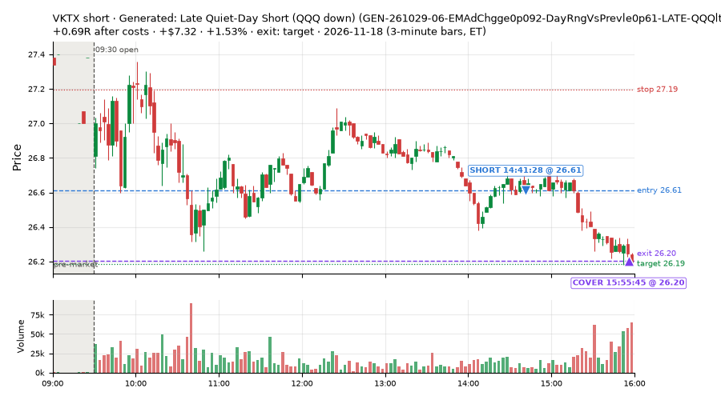
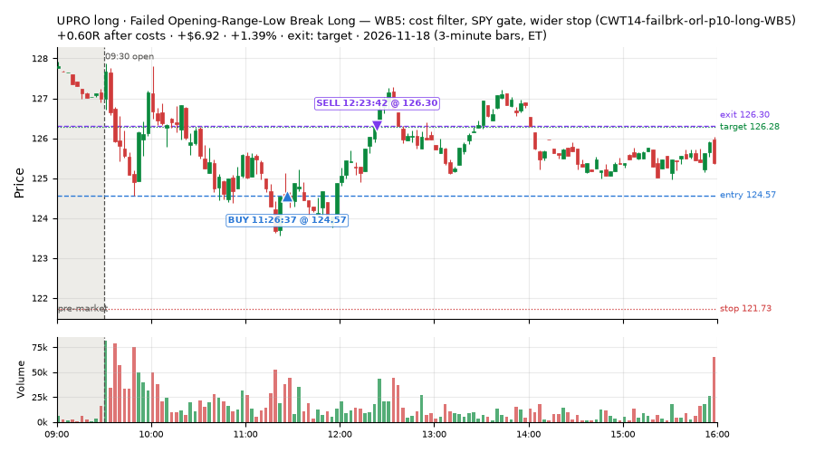
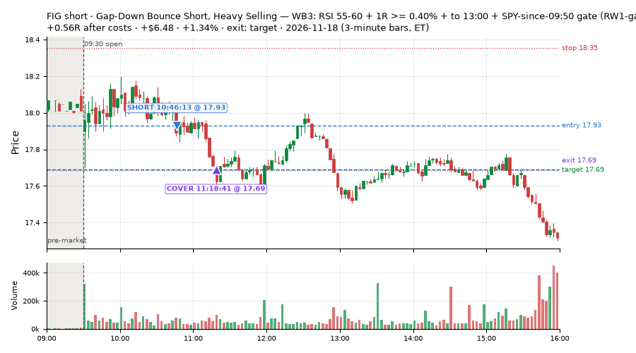
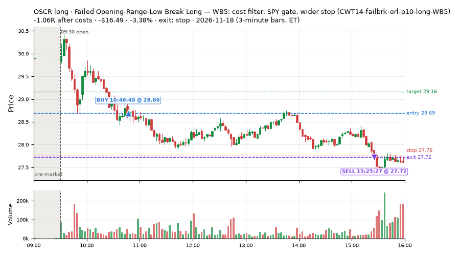
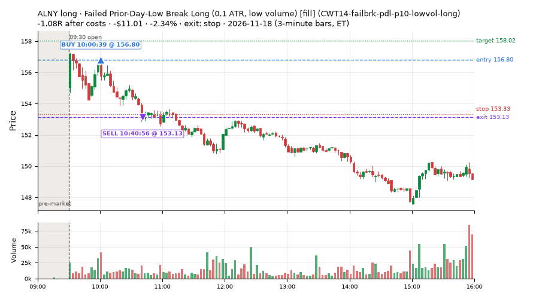
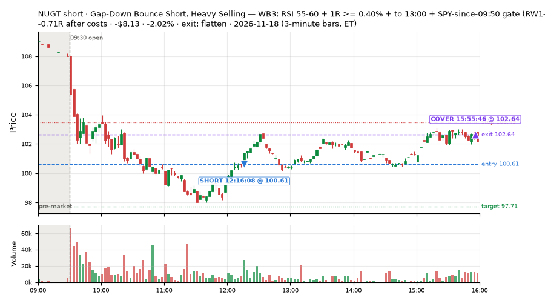
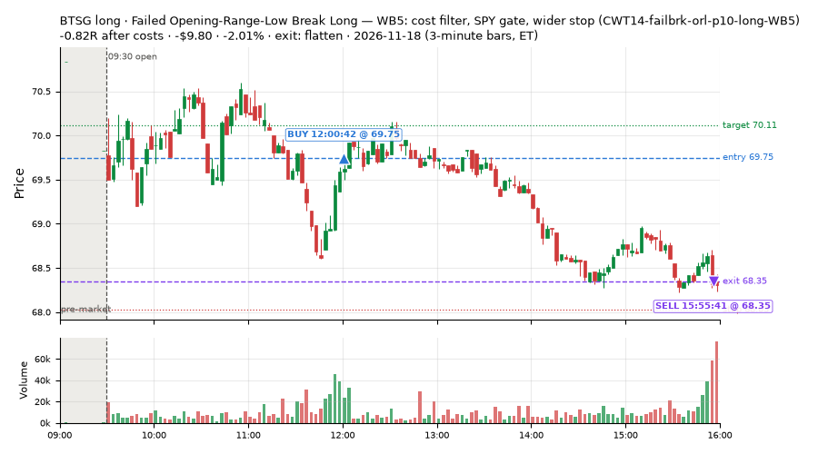
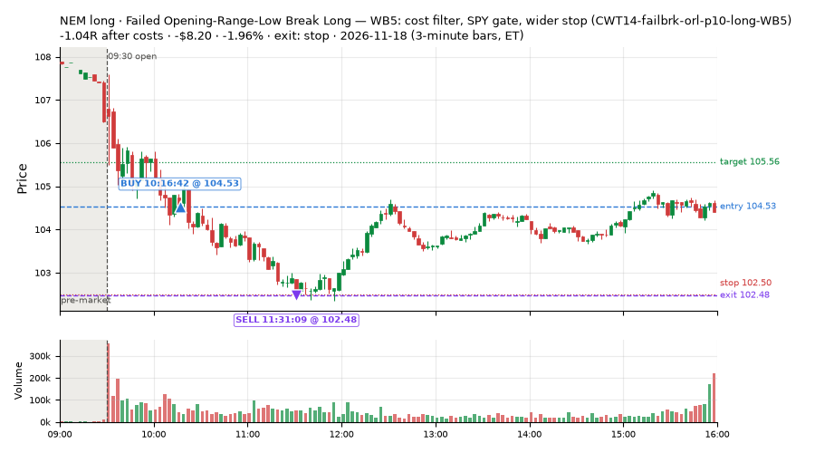

153 trades · win rate 69% · P/L $37.61
PROBATION: no live setup has passed both locked test periods. 10 owner-directed setups added 2026-10-08 (MarcoFlow top 5 + 5 new), untested live. RW6G1 (RW6 + VWAP band guard) added 2026-10-09, probation.

| Symbol | Setup | Side | In | Out | Entry | Exit | Exit reason | % gained | P/L |
|---|---|---|---|---|---|---|---|---|---|
| VKTX | Generated: Late Quiet-Day Short (QQQ down) (GEN-261029-06-EMAdChgge0p092-DayRngVsPrevle0p61-LATE-QQQltm0p3-t1s1-short) | short | 14:41 | 15:55 | 26.61 | 26.20 | target | +1.53% | $7.32 |
| UPRO | Failed Opening-Range-Low Break Long — WB5: cost filter, SPY gate, wider stop (CWT14-failbrk-orl-p10-long-WB5) | long | 11:26 | 12:23 | 124.57 | 126.30 | target | +1.39% | $6.92 |
| FIG | Gap-Down Bounce Short, Heavy Selling — WB3: RSI 55-60 + 1R >= 0.40% + to 13:00 + SPY-since-09:50 gate (RW1-gapdn-bounce-flowsell-short-FD-WB3) | short | 10:46 | 11:18 | 17.93 | 17.69 | target | +1.34% | $6.48 |
| Symbol | Setup | Side | In | Out | Entry | Exit | Exit reason | % lost | P/L |
|---|---|---|---|---|---|---|---|---|---|
| OSCR | CWT14-failbrk-orl-p10-long-WB5 | long | 10:46 | 15:25 | 28.69 | 27.72 | stop | -3.38% | $-16.49 |
| ALNY | CWT14-failbrk-pdl-p10-lowvol-long | long | 10:00 | 10:40 | 156.80 | 153.13 | stop | -2.34% | $-11.01 |
| NUGT | RW1-gapdn-bounce-flowsell-short-FD-WB3 | short | 12:16 | 15:55 | 100.61 | 102.64 | flatten | -2.02% | $-8.13 |
| BTSG | CWT14-failbrk-orl-p10-long-WB5 | long | 12:00 | 15:55 | 69.75 | 68.35 | flatten | -2.01% | $-9.80 |
| NEM | CWT14-failbrk-orl-p10-long-WB5 | long | 10:16 | 11:31 | 104.53 | 102.48 | stop | -1.96% | $-8.20 |








Signal to fill: median 1s, 90th percentile 3s (153 trades). Bars close each minute; the order follows the bar close.
Best excursion (MFE): median 0.36R; worst (MAE) median 0.37R. 29% of trades never got +0.25R in our favour; 0 reached +1R and still closed at or below 0.
| Symbol | Setup | Best R | Worst R | Closed R |
|---|---|---|---|---|
| ACIW | GEN-261019-03-Ret15mATRlem0p12-FromOpenATRlem0p34-SMA20slopege0p29-PM-BRoplt0p5-t05s1-long | +0.31 | -1.53 | -1.53 |
| VIG | CWT14-failbrk-pdl-p10-lowvol-long | +0.14 | -1.31 | -1.66 |
| TAN | CWT14-failbrk-pdl-p10-lowvol-long | +0.54 | -1.10 | -1.11 |
| HZN | RW1-gapdn-bounce-flowsell-short-FD-WB3 | +0.48 | -0.99 | -1.11 |
| COF | CWT14-failbrk-pdl-p10-lowvol-long | +0.41 | -1.06 | -1.11 |
| Entry time | Trades | Win | Avg R | P/L |
|---|---|---|---|---|
| 09:50-10:30 | 59 | 73% | -0.04 | $-4.55 |
| 10:30-11:30 | 43 | 67% | +0.04 | $35.81 |
| 11:30-13:00 | 27 | 67% | -0.04 | $-4.55 |
| 13:00-14:00 | 5 | 60% | +0.14 | $7.30 |
| 14:00-16:00 | 19 | 63% | +0.03 | $3.60 |
| Setup | Trades | Win | Avg R after costs | Adj R (net of SPY) | Avg R ex-market (all sessions) | P/L |
|---|---|---|---|---|---|---|
| Failed Opening-Range-Low Break Long — WB5: cost filter, SPY gate, wider stop (CWT14-failbrk-orl-p10-long-WB5) | 71.0 | 80% | +0.12 | +0.11 | +0.10 (beta +0.28, n 75) | $78.33 |
| Failed Prior-Day-Low Break Long (0.1 ATR, low volume) [fill] (CWT14-failbrk-pdl-p10-lowvol-long) | 44.0 | 64% | -0.13 | -0.10 | -0.08 (beta +1.01, n 196) | $-23.36 |
| Generated: PM Sharp-Drop Buy (in uptrend) (GEN-261019-03-Ret15mATRlem0p12-FromOpenATRlem0p34-SMA20slopege0p29-PM-BRoplt0p5-t05s1-long) | 1.0 | 0% | -1.53 | -1.57 | -0.24 (beta +1.74, n 14) | $-6.91 |
| Generated: Lunch New-Low Short (selling) (GEN-261026-03-NewLOD-Flow3lem0p37-FromOpenATRlem0p78-LUNCH-BRopgt0p5-holdtr-short) | 4.0 | 100% | +0.85 | +0.58 | – | $20.11 |
| Generated: Late Quiet-Day Short (QQQ down) (GEN-261029-06-EMAdChgge0p092-DayRngVsPrevle0p61-LATE-QQQltm0p3-t1s1-short) | 15.0 | 67% | +0.14 | +0.17 | +0.18 (beta -0.06, n 74) | $8.24 |
| Afternoon VWAP Reclaim Fade (NS4-pm-vwap-reclaim-oversold-short) owner-directed; holdouts once: Sep-Oct -0.086R n49, Apr-Jun -0.080R n342 | 1.0 | 0% | -0.70 | -0.48 | -0.63 (beta -2.22, n 13) | $-1.98 |
| Gap-Down Bounce Short, Heavy Selling — WB3: RSI 55-60 + 1R >= 0.40% + to 13:00 + SPY-since-09:50 gate (RW1-gapdn-bounce-flowsell-short-FD-WB3) | 13.0 | 38% | -0.40 | -0.24 | -0.30 (beta -1.47, n 33) | $-30.32 |
| Gap-Down Pop Fade (all day) — WB4: WB3 + SPY exit 0.40% (RW5-heat30-flowsell-rsi5pop-gapdn-short-FD-WB4) | 4.0 | 25% | -0.30 | +0.07 | +0.11 (beta -0.99, n 8) | $-6.50 |
Market direction (SPY, beta 1) accounted for $-22.67 of today's $37.61; the rest ($60.28) came from the setups themselves. Avg R net of SPY: +0.02 (incl. a hedge leg's cost; report only).
19 setups live today. Today: 259 signals, 153 taken, 0 lost because another setup held the symbol (0%). Since 2026-11-12 (5 sessions): 956 signals, 451 taken, 2 lost to other setups (0%). Peak open positions today 69 of 400 slots. Earnings blackout removed 321 symbols before scanning.
Simulated playing time (not live): 504 what-if trades of signals not taken, avg +0.00R, 63% winners; of them 2 lost to another setup (avg +0.10R).
Silent: IDX2-spy075-0945-3x-trail, LD4-st4-breadthup-t1s05-long, GEN-261027-02-NewLOD-RSI14le35-Gapge2-PM-SPYup-holdtr-long, GEN-261027-03-NewLOD-DayPosle0p19-SMA20dlem0p59-LAM-SPYgt0p5-hold-long, GEN-261022-07-Z12lem1p9-FlowShiftlem0p96-ATRdge3p6-AM-BRopgt0p5-t1s1-short, CWT04-backside-vwaptest-a25-short
| Prio | Setup | Today sig / taken | Sessions | Signals / taken / trades | Taken/day | Expected/day | Lost to other setups | Lost to (setup n) | Top skip reasons | SIMULATED: not-taken n / avg R / win | Verdict |
|---|---|---|---|---|---|---|---|---|---|---|---|
| 1 | Gap-Down Pop Fade (all day) — WB4: WB3 + SPY exit 0.40% RW5-heat30-flowsell-rsi5pop-gapdn-short-FD-WB4 | 7 / 4 | 2 | 13 / 8 / 8 | 4.00 | – | 0 | – | spread / quote / size 5 | 5 / +0.06R / 60% | ok 20.0 entries/week |
| 2 | Gap-Down Bounce Short, Heavy Selling — WB3: RSI 55-60 + 1R >= 0.40% + to 13:00 + SPY-since-09:50 gate RW1-gapdn-bounce-flowsell-short-FD-WB3 | 22 / 13 | 2 | 49 / 33 / 33 | 16.50 | – | 0 | – | spread / quote / size 8, other 8 | 16 / -0.08R / 50% | ok 82.5 entries/week |
| 3 | Generated: Late Pullback Buy (MACD rising) — WB5: 14:00-14:30, $100M ADV, breadth gate GEN-261027-01-MACDhge0p12-Ret15mATRlem0p069-LATE-BRvwgt0p5-t05s1-long-WB5 | 0 / 0 | 2 | 0 / 0 / 0 | 0.00 | – | 0 | – | – | 0 / – | quiet - wait no signals in 2 session(s); too early to tell |
| 4 | Generated: PM Runner Fade (SPY down) GEN-261019-09-EMAdChgge0p15-Since950ATRge0p6-PM-SPYltm0p5-t05s1-short | 0 / 0 | 3 | 18 / 3 / 3 | 1.00 | – | 0 | – | not shortable / shorts off 12, other 2, spread / quote / size 1 | 15 / +0.25R / 87% | slow 5.0 entries/week; ~12 weeks to 60 trades |
| 5 | Generated: Late Volume-Spike Low Buy GEN-261026-02-VolRatioge2-SMA20dlem0p58-BarsSinceLODle1-LATE-BRoplt0p35-t1s1-long | 0 / 0 | 3 | 21 / 15 / 15 | 5.00 | – | 0 | – | other 4, spread / quote / size 2 | 6 / -0.41R / 33% | ok 25.0 entries/week |
| 6 | Index Dip Bounce 2 3x S&P IDX2-spy075-0945-3x-trail | 0 / 0 | 5 | 0 / 0 / 0 | 0.00 | – | 0 | – | – | 0 / – | silent no signals in 5 session(s); no expected rate on file |
| 7 | * Oversold EMA Cross-Down with Breadth Turning Up (near-miss) LD4-st4-breadthup-t1s05-long | 0 / 0 | 5 | 0 / 0 / 0 | 0.00 | – | 0 | – | – | 0 / – | silent no signals in 5 session(s); no expected rate on file |
| 8 | Monday Weak-RS NS3 Short (near-miss) NM-RWN5-ns3-mon-weakrs-short | 0 / 0 | 5 | 1 / 1 / 1 | 0.20 | – | 0 | – | – | 0 / – | slow 1.0 entries/week; ~60 weeks to 60 trades |
| 9 | Generated: Open Prior-Day-Low Buy (SPY down) GEN-261019-05-RSIslopelem9-PDLdistle0p14-EMAdifflem0p46-OPEN-SPYltm0p5-t1s1-long | 0 / 0 | 3 | 19 / 11 / 11 | 3.67 | – | 0 | – | spread / quote / size 6, other 2 | 8 / -0.78R / 12% | ok 18.3 entries/week |
| 10 | Panic Flush Reversal (deep, 5x volume) CWT05-flush-m075-v5-long | 0 / 0 | 5 | 3 / 2 / 2 | 0.40 | – | 0 | – | broker rejected 1 | 1 / +0.59R / 100% | slow 2.0 entries/week; ~30 weeks to 60 trades |
| 11 | Generated: PM Gap-Up New-Low Buy (SPY up) GEN-261027-02-NewLOD-RSI14le35-Gapge2-PM-SPYup-holdtr-long | 0 / 0 | 3 | 0 / 0 / 0 | 0.00 | – | 0 | – | – | 0 / – | silent no signals in 3 session(s); no expected rate on file |
| 12 | Generated: Lunch New-Low Short (selling) GEN-261026-03-NewLOD-Flow3lem0p37-FromOpenATRlem0p78-LUNCH-BRopgt0p5-holdtr-short | 4 / 4 | 5 | 4 / 4 / 4 | 0.80 | – | 0 | – | – | 0 / – | slow 4.0 entries/week; ~15 weeks to 60 trades |
| 13 | Generated: Late-AM New-Low Buy (SPY up) GEN-261027-03-NewLOD-DayPosle0p19-SMA20dlem0p59-LAM-SPYgt0p5-hold-long | 0 / 0 | 3 | 0 / 0 / 0 | 0.00 | – | 0 | – | – | 0 / – | silent no signals in 3 session(s); no expected rate on file |
| 14 | Generated: Late Quiet-Day Short (QQQ down) GEN-261029-06-EMAdChgge0p092-DayRngVsPrevle0p61-LATE-QQQltm0p3-t1s1-short | 37 / 15 | 3 | 262 / 74 / 74 | 24.67 | – | 1 | CWT14-failbrk-pdl-p10-lowvol-long 1 | per-setup cap 100, not shortable / shorts off 44, spread / quote / size 23 | 188 / +0.14R / 66% | ok 123.3 entries/week |
| 15 | Generated: PM Sharp-Drop Buy (in uptrend) GEN-261019-03-Ret15mATRlem0p12-FromOpenATRlem0p34-SMA20slopege0p29-PM-BRoplt0p5-t05s1-long | 1 / 1 | 5 | 26 / 14 / 14 | 2.80 | – | 1 | RW1-gapdn-bounce-flowsell-short-FD-WB3 1 | spread / quote / size 8, other 3, symbol held by another setup 1 | 12 / +0.24R / 75% | slow 14.0 entries/week; ~4 weeks to 60 trades |
| 16 | Generated: Morning Breakdown Short (volatile) GEN-261022-07-Z12lem1p9-FlowShiftlem0p96-ATRdge3p6-AM-BRopgt0p5-t1s1-short | 0 / 0 | 3 | 0 / 0 / 0 | 0.00 | – | 0 | – | – | 0 / – | silent no signals in 3 session(s); no expected rate on file |
| 17 | Afternoon VWAP Reclaim Fade NS4-pm-vwap-reclaim-oversold-short | 13 / 1 | 5 | 36 / 13 / 13 | 2.60 | 3.05 | 0 | – | spread / quote / size 10, other 10, not shortable / shorts off 3 | 23 / +0.01R / 56% | slow 13.0 entries/week; ~5 weeks to 60 trades |
| 18 | Failed Prior-Day-Low Break Long (0.1 ATR, low volume) [fill] CWT14-failbrk-pdl-p10-lowvol-long | 85 / 44 | 5 | 399 / 196 / 196 | 39.20 | – | 0 | – | spread / quote / size 138, other 65 | 202 / -0.12R / 60% | ok 196.0 entries/week |
| 19 | Failed Opening-Range-Low Break Long — WB5: cost filter, SPY gate, wider stop CWT14-failbrk-orl-p10-long-WB5 | 90 / 71 | 2 | 101 / 75 / 75 | 37.50 | – | 0 | – | spread / quote / size 25, broker rejected 1 | 26 / +0.08R / 77% | ok 187.5 entries/week |
Every trade is attached as a CSV you can open and edit in Excel or Google Sheets. Live page: https://misiti15.github.io/MCF/live/